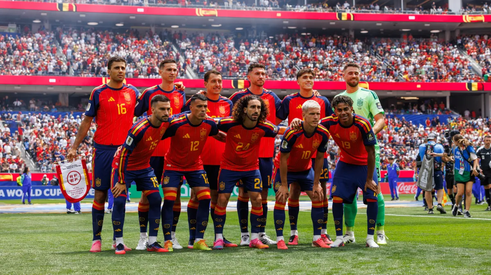

A Fúria é Bicampeã!
A Espanha conquista o mundo pela segunda vez em 2026, desbancando a Argentina em uma final histórica e dominando as estatísticas do torneio.
Destaques da Campanha
Artilheiro
5
Mikel Oyarzabal
Gols marcados.
Líder de Assistências
2
Dani Olmo e Marc Cucurella
passes para gol
de ambos.
Participações em Gols
6
Mikel Oyarzabal
(5 Gols + 1 Assistência).
Melhor Goleiro
658min
Unai Simón
Sem sofrer gols nessa Copa.

O Elenco Campeão (Titulares & Destaques)
| Jogador | Posição | Clube Atual | Gols na Copa |
|---|---|---|---|
| Unai Simón | Goleiro | Athletic Club | 0 |
| Pau Cubarsí | Zagueiro | Barcelona | 0 |
| Aymeric Laporte | Zagueiro | Athletic Club | 0 |
| Pedro Porro | Lateral Direito | Tottenham | 2 |
| Marc Cucurella | Lateral Esquerdo | Real Madrid | 0 |
| Rodri (C) | Volante | Manchester City | 0 |
| Dani Olmo | Meio-Campo | Barcelona | 0 |
| Fabian Ruiz | Meio-Campo | Paris Saint-German | 1 |
| Lamine Yamal | Ponta Direita | Barcelona | 1 |
| Álex Baena | Ponta Esquerda | Atlético de Madrid | 1 |
| Mikel Oyarzabal | Atacante | Real Sociedad | 5 |

Histórico de Títulos da Espanha
2010
Copa do Mundo na África do Sul
O primeiro título comandado por Iniesta, Xavi e Casillas. A
Fúria venceu a Holanda por 1x0 na final.
2026
Copa do Mundo na América do Norte
O bicampeonato histórico. Sob a maestria da nova geração,
vitória por 1x0 contra a Argentina.